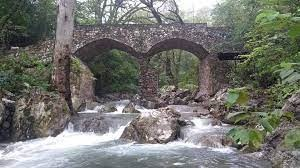
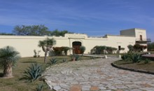
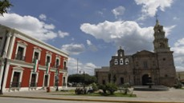
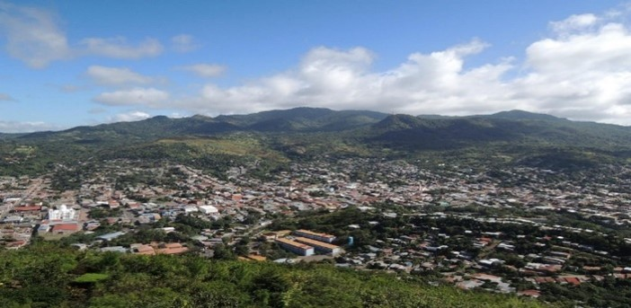

GASTRONOMÍA
Carne seca, machacado, cabrito al pastor y en salsa, cortes de carne asada, tacos agachados, tortas compuestas, glorias, cajetas, marquetas, encanalados, besos de indios y natillas.DATOS TURÍSTICOS
Linares es una ciudad en el estado de Nuevo León, México, que cuenta con varios lugares turísticos interesantes para visitar.- Parque Ecológico La Estanzuela: Es un hermoso parque ecológico con senderos para caminar, áreas de picnic, cascadas y una gran diversidad de flora y fauna. Es un lugar ideal para disfrutar de la naturaleza y hacer actividades al aire libre.
- Museo Hacienda San Pedro: Ubicado en una antigua hacienda, este museo muestra la historia y cultura de la región. Exhibe piezas arqueológicas, arte popular y objetos antiguos relacionados con la producción agropecuaria.
- Iglesia de San Felipe de Jesús: Esta iglesia histórica es un importante punto de referencia en Linares. Construida en el siglo XVIII, cuenta con una hermosa arquitectura y detalles religiosos.
- Plaza Principal: La plaza principal de Linares es el centro de la vida social de la ciudad. Aquí encontrarás una fuente, áreas verdes, bancos para descansar y algunos monumentos emblemáticos. Es un buen lugar para relajarse y disfrutar del ambiente local.
- Mirador El Calvario: Desde este mirador, situado en lo alto de una colina, podrás obtener una vista panorámica de Linares y sus alrededores. Es especialmente impresionante al atardecer, cuando puedes apreciar la belleza de la ciudad iluminada.



